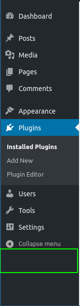
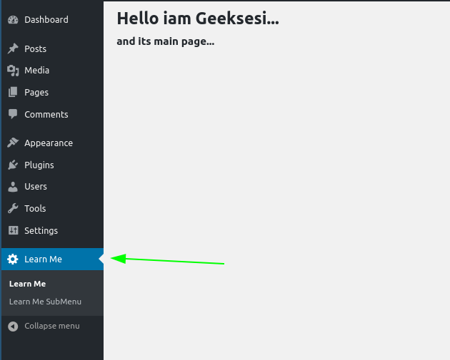

ساخت افزونه وردپرس - ساخت صفحه ادمین
سلامی دوباره. اینبار می خواهیم یکم جدی تر به قضیه نگاه کنیم. اگه پست قبل و قبلیش رو نخوندید و نمی دونید که چجوری یه پلاگین وردپرس رو استارت بزنید حتما برید و پست قبل رو بخونید.
از اونجایی که با عنوان پست اسپویل شد که توی این قسمت در مورد چی می خواهیم حرف بزنیم از اضافه گویی و اینا می گذرم و میرم سراغ اصل قضیه.
انواع صفحاتی که می تونیم برای مدیران محترم ایجاد کنیم
از اونجاییکه حرف مرد یکیه و توی بخش قبل هم گفتیم به خاطر ساختار هووک بیسی وردپرس شما می تونید تمام وردپرس رو تغییر بدید پس یعنی عملا تایتلی که برای این بخش زدم بی معنیه.
شما می تونید هرجور تغییری که عشقتون می کشه برای مدیران وبسایت محترم ( و حتی غیر محترماشون ) ایجاد کنید ولی خب این وسط ۲ مورد هست که معمولا من استفاده می کنم و تویه حیطه چیزهایی هستند که میخواهیم در موردشون صحبت کنیم.
- یک زیرمنو برای بخش تنظیمات
- یک منوی مستقل
یه جوری عنوان این ۲ تا بخش رو نوشتم که خودم هم شک کردم بهشون. ولش کن بزار با عکس نشونتون بدم که داریم از چی صحبت میکنیم.
- اضافه کردن یه صفحه به بخش تنظیمات

- اضافه کردن یه منوی مستقل به وردپرس 
خب با عکس نشون دادم تا متوجه بشید. ( البته خب مهم هم نیست اگه بازم نفهمیدید. چون خودمم الان نمی دونم دارم چی می نویسم.)
بیخیال بریم کد بزنیم.
ساخت صفحه تنظیمات برای پلاگین (مورد اول)
دیگه حوصله توضیح دادن ندارم کد رو ببینید خودتون متوجه شید.
1 | add_action('admin_menu', 'lhtmwpp_add_settings_page'); |
خب مجبورم براتون توضیح بدم…
مسئله خیلی راحته اول ما باید به ریسمان الهی چنگ بزنیم ( اینجا منظور اینه که از یدونه از این هوکای وردپرس استفاده کنیم.) خب محکم ترین ریسمانی که می تونیم بهش چنگ و دندون بندازیم ریسمان admin_menue هست.
خب حالا چجوری چنگ بزنیم. خیلی راحته (کد رو دیدید اسپویل شده دیگه نمیشه هیجان قاطیش کرد). وردپرس یه تابع داره به اسم add_action (ادرس صفحه توضیحات وردپرسش رو گزاشتم خودتون برید بخونید.) که اسم هوک و اسم تابعی که می خواهیم اجرا بشه رو ازمون می گیره.
حالا شاید بگید یعنی چی. خب اشکال نداره بگید منم مجبورم توضیح بدم.
الان ما با فراخوانی این تابع به وردپرس فهموندیم که هر وقت خواستی اون صفحه تنظیمات رو رندر کنی این تابعی که ما بهت گفتیم رو هم اجرا کن.
بریم سر وقت خود تابع
خب ما اینجا یه تابع دیگه از توابع وردپرس رو استفاده کردیم.لینکش رو می زارم.
ما توی این تابع ۵ تا ورودی داریم. توضیح میدم به ترتیب.
- عنوان صفحه
- عنوان منو
- سطح دسترسی (لیست سطوح دسترسی رو می تونید اینجا ببینید. شاید بعدا در موردش نوشتم ولی فعلا برید به دایکیومنت وردپرس) لیست سطور دسترسی وردپرس
- یه اسم شاخص برای این منو (از اونجاییکه باید شاخص باشه منطقا باید چیزی باشه که هیچ برنامه نویس دیگه ای به ذهنش هم نرسه بخواد چنین چیزی بنویسه)
- تابعی که می خواهیم صفحه رو برامون هندل کنه.
خب من همه اینا رو گزاشتم کنار هم براتون نتیجش هم شد این :

خب دیگه بسه بریم بخش بعد.
ساخت منوی مستقل (مورد دوم)
خب نگاه کنید نخ دیگه ای نداریم این وسط که بخواهیم بهش چنگول بندازیم. از همون تابعی که برای نخ admin_menu ساختیم استفاده می کنیم.
خب بریم همون تابع رو تغییرش بدیم. به بخش های قبلی دست نمی زنیم. پس الکی قاطی پاتی نکنید.
این دفعه بزارید توضیح بدم بعد کد کامل رو بزارم.
۲ تا تابع دیگه از توابع وردپرس رو می خواهیم استفاده کنیم. توضیح می دم با لینک دایکیومنت خودشون.
add_menu_page
ورودی هاش رو توضیح میدم.
- عنوان صفحه
- عنوان منو
- سطح دسترسی
- شاخص اسم منو
- تابعی که می خوای اون صفحه رو مدیریت کنه
- ادرس ایکون
- ترتیبی که می خواهید از بالا منو تون قرار بگیره (بیخیالش بشید بزارید بره آخر.)
add_submenu_page
ورودی هاش رو توضیح میدم.
- اون اسم شاخصه که توی add_menu_page تعیین کردیم
- عنوان صفحه
- عنوان منو
- سطح دسترسی
- شاخص اسم منو
- تابعی که می خوای اون صفحه رو مدیریت کنه
- ادرس ایکون
- ترتیبی که می خواهید از بالا منو تون قرار بگیره (بیخیالش بشید بزارید بره آخر.)
خب من اینجا ۲ تا صفحه می سازم کدشو می زارم ببینید. دیگه بیشتر از این هم توضیح نمی دم. خسته شدم.
1 | <?php |

سخن پایانی.
پروژه توی گیتهاب موجوده. اگه حوصله ندارید کد ها رو از اینجا بخونید یا مرحله به مرحله اجرا کنید.
من سعی کردم مرحله به مرحله کامیت کنم. تک تک تغییرات رو می تونید ببینید.
اگه مسئلهای، کمکی، راهنمایی نیاز داشتید تعارف نکنید، راه های ارتباطیم هم زیاده :))))